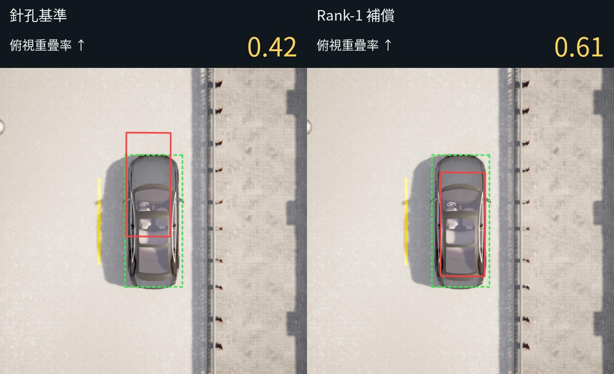

配置與誤差
越低越好 · 單位 mFull 在本序列的深度誤差高於僅 Rank-1；保留這個結果，不用挑片掩蓋 tightfit 的限制。

同一段 CARLA 序列、同一組來源影格；這是配置消融，不是跨模型排行榜。
深度只看相機前向 Z；3D 中心誤差看三個方向的幾何中心距離。RMSE 為整段統計，影片數字為當幀數值。
比較地面範圍的交集／聯集；俯視框不等於車頂輪廓。它不是畫面像素重疊率。
包含 Rank-1、ground、feedback、tightfit；「停用貼合」只移除 tightfit。A、D、F 是配置代號。
來源：2026-11-16 controlled_20261116，GT深度範圍5.16–35.77m。每配置174個預測／165配對／34漏檢／9未配對預測。誤差只計配對物件，未配對不當0。四種配置的有效預測尺寸先驗仍與真值不同。
metadata 有三處重複時間或幀號；影片依 image ID 對照，不能宣稱嚴格感測器同步。影片30fps是離線播放，不代表推論FPS。原始跨方法基準設定、真實轉彎因果資料及訓練h3D,proj的原始定義仍待核實。
實測比較與幾何示意分開；影片保留方法與大字數值。
固定長方體中心Z=10m，只改yaw 0–180°。h2D為8角點投影的最大v減最小v；h_ideal=fyH/Z；比例r=h2D/h_ideal，因此Z_pinhole=Z/r。示例估計深度約7.05–8.78m，不能當作實測成績。h_ideal不是已核實的原始訓練h3D,proj；尚缺真實車身旋轉實驗。
先補前三項，再擴充動態情境。點選素材，查看拍攝方式與要驗證的問題。
固定距離轉角 → 路口轉彎 → 超車切入 → 同條件基準比較 → 失敗案例。每組保留完整原片、相機參數、GT與逐幀預測，再另外剪10–15秒展示版。完整資料不能只留下效果最好的片段。
轉角實驗建議分別保存車身instance mask高度、偵測框高度、理想投影高度，區分輪廓幾何與偵測器框誤差。10／20／30m各自成片。